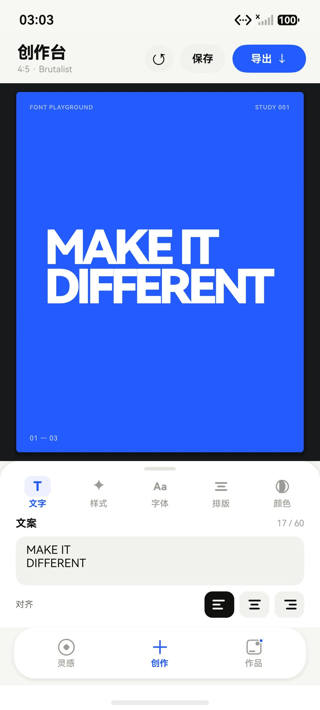
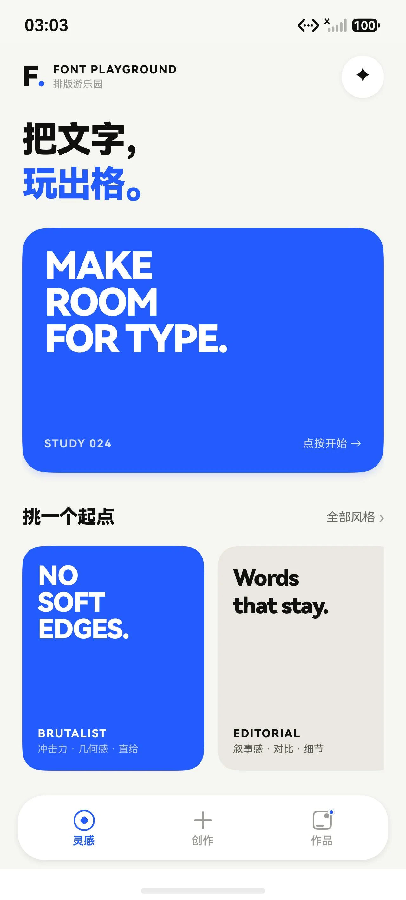
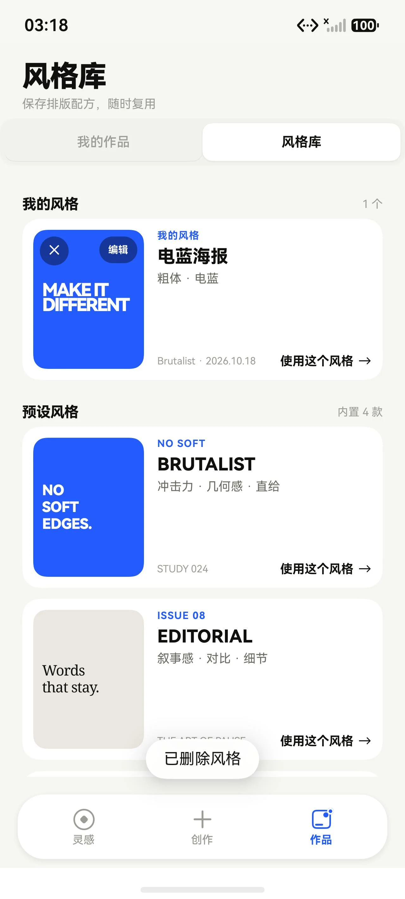

实时画布
点选文字后拖动、绕中心旋转；选中框按背景亮度自动切换白色或蓝色，深色底上也看得清。
HARMONYOS · ARKTS / ARKUI
把文字，玩出格。
同一套排版实验，用 ArkTS / ArkUI 原生重写。四套预设、实时画布、HSV 取色、作品收藏与风格库，全部在端侧完成——没有 WebView。


SCREENS
截图来自本机 HarmonyOS 模拟器里的实际运行：从灵感页挑一个起点，在创作页调排版，最后把作品和风格收进 Gallery。点按截图可以查看原图。
三段式导航、留白 Hero 与风格入口。点按海报或卡片就能进入创作。
实时画布配底部工具栏，文字、样式、字体、排版、颜色分区，改哪一项都立刻反馈。

保存过的作品在这里继续编辑、导出 PNG，或二次确认后删除。

自定义风格与四款预设并排；点卡片直接套用，也可以改名字和标签。
WHAT'S INSIDE
界面全部由 ArkUI 声明式构建，手势、存储和导出都走系统能力。
点选文字后拖动、绕中心旋转；选中框按背景亮度自动切换白色或蓝色，深色底上也看得清。
Brutalist、Editorial、Playful、Mono Grid。一键换掉整套字体、间距、颜色与版式。
字体、字号、字距、行距、字形倾斜与对齐逐项可调，输入文案时画布整体缩放而不是重排。
配对色板、HSV 调色盘、HEX 输入和最近颜色都在同一个面板里，文字与背景目标随时切换。
作品写进应用沙箱；风格只记排版配方，命名加标签后可以反复套用，旧数据也能兼容读取。
用 componentSnapshot 截取画布，ImagePacker 编码后写入系统相册，保存前走系统确认框。
UNDER THE HOOD
单 entry 模块、Stage 模型。作品和风格分别序列化到应用沙箱里的 JSON 文件，读取时逐字段校验，坏数据回退到预设值。
entryability/EntryAbility.ets
model/Typography.ets
pages/Index.ets
services/
├── GalleryStore.ets
├── StyleStore.ets
├── ArtworkExporter.ets
└── ColorUtils.etsSOURCE
用 DevEco Studio 打开即可运行；命令行构建产出未签名 HAP，模拟器可以直接安装。
github.com/eXperienceJouRney/FontPlayground